TA Recruitment
Mobile App UX/UI & Wireframe Design
TA Recruitment is a mobile application designed to manage recruitment and candidate processes. In this project, I was responsible for gathering requirements, creating wireframes, and designing the UX/UI. The result was a clear and functional interface that supports both candidates and administrators throughout the recruitment flow.
Tools Used
Figma
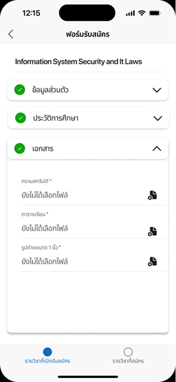
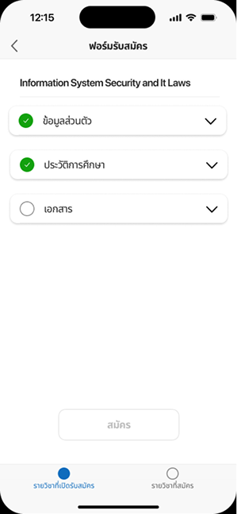
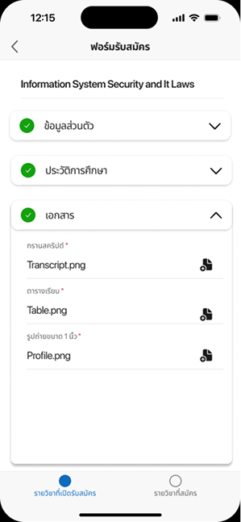
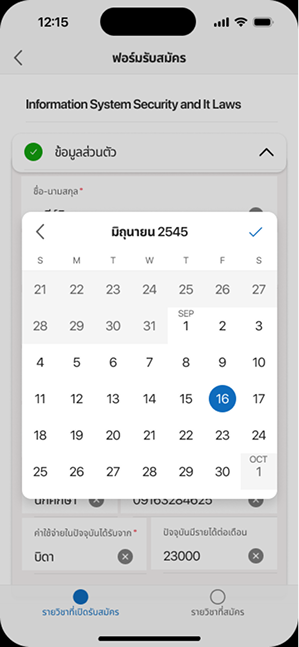
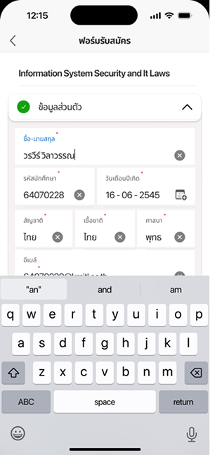
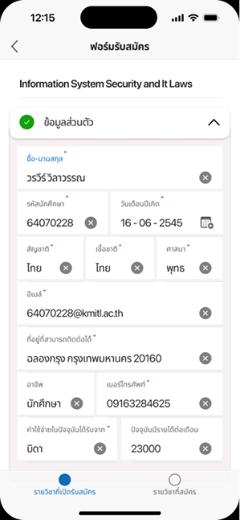
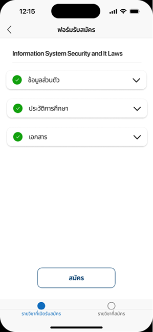
 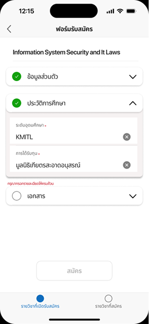
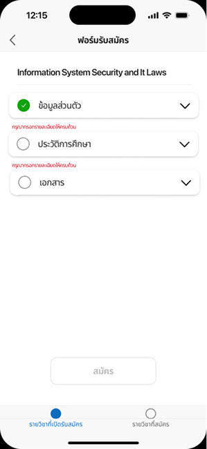
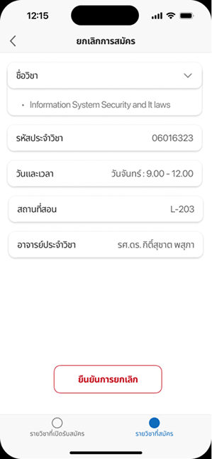
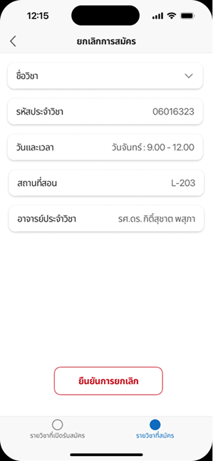
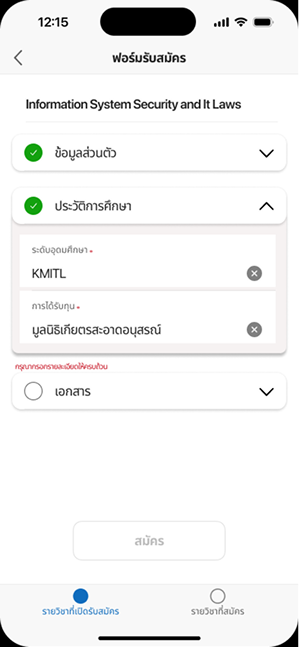
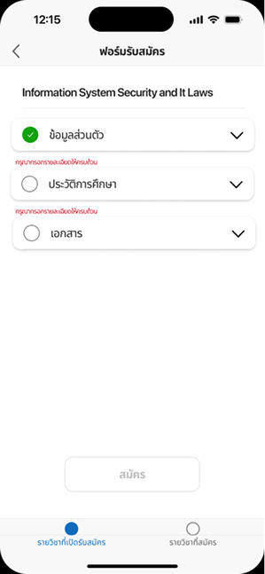
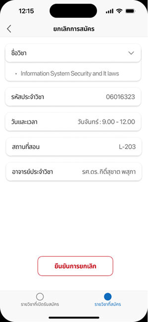
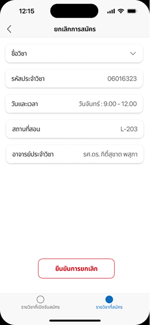
 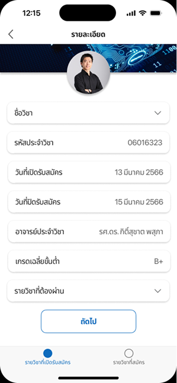
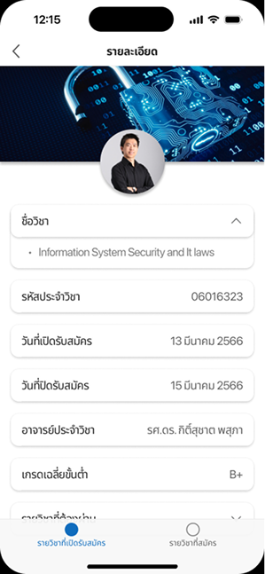
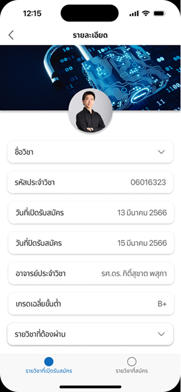
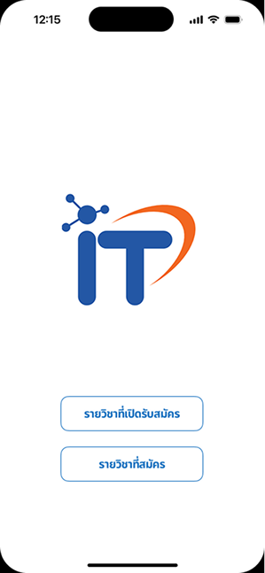
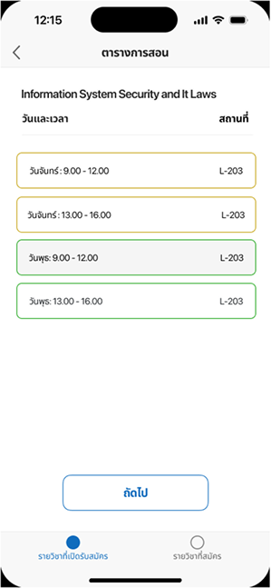
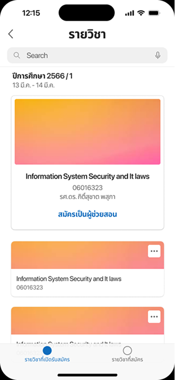
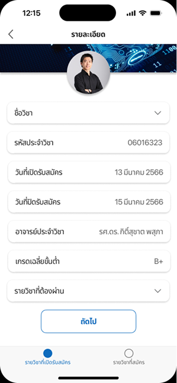
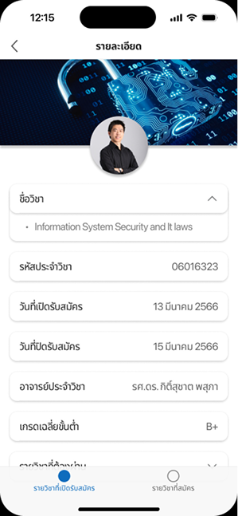
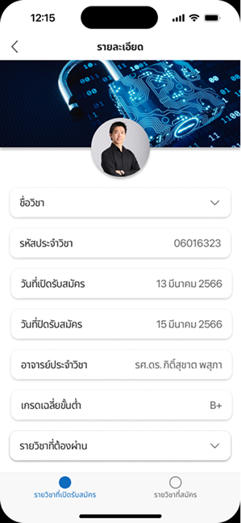
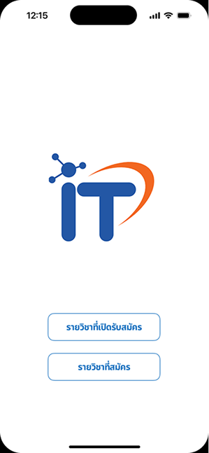
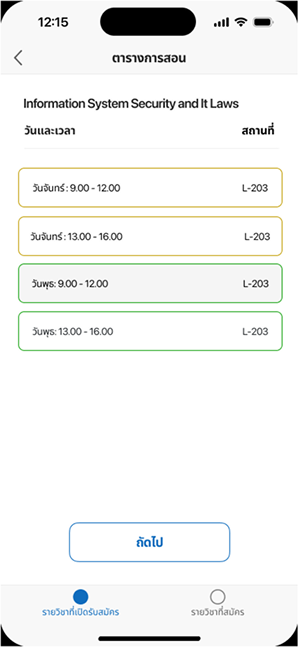
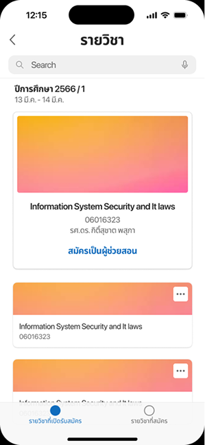
 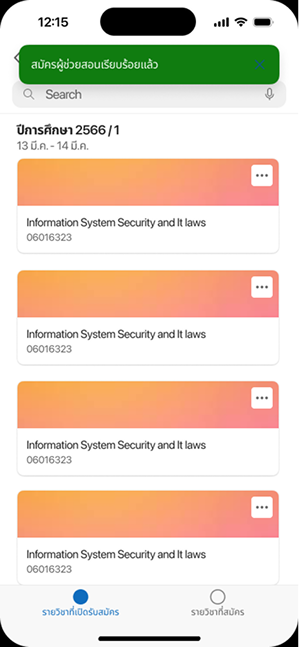
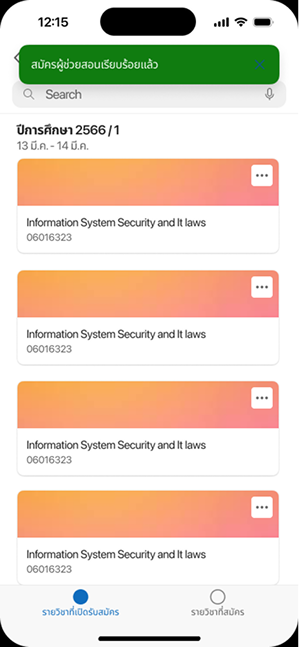
 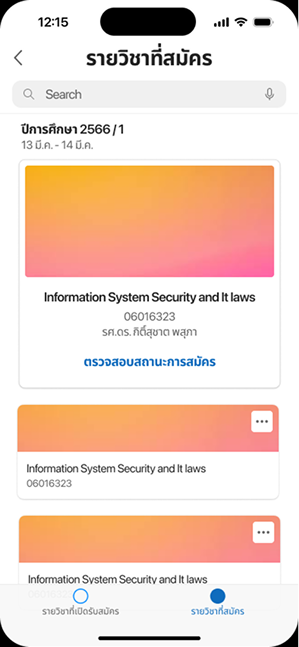
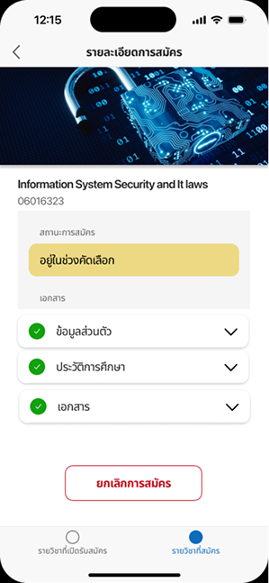
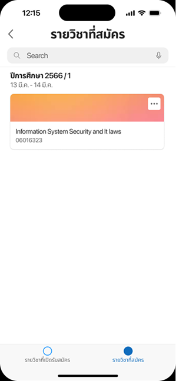
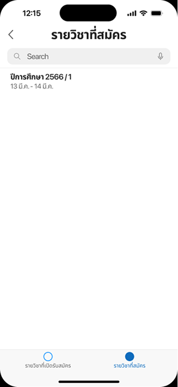
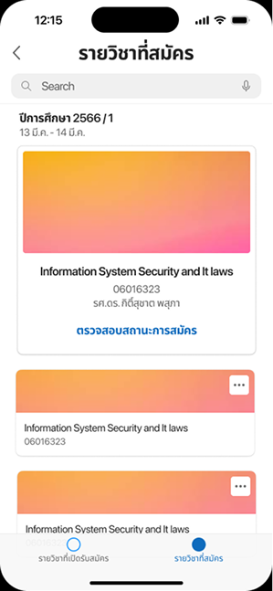
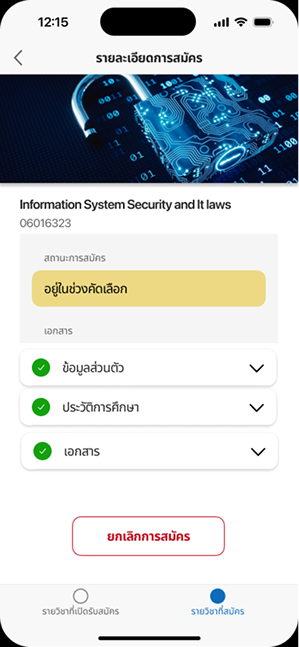
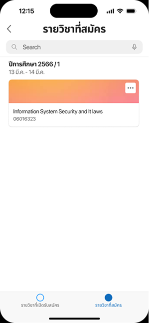
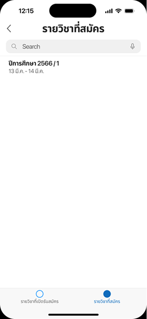
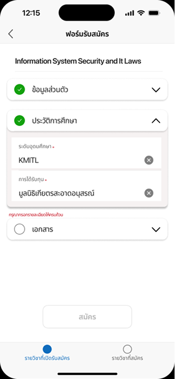
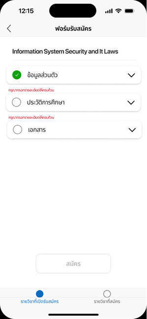
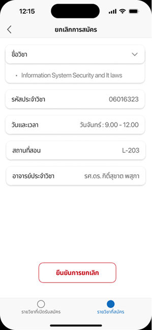
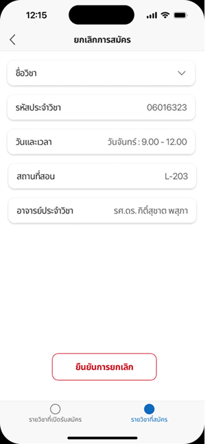
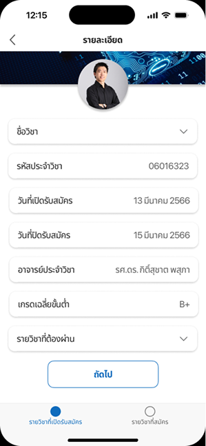
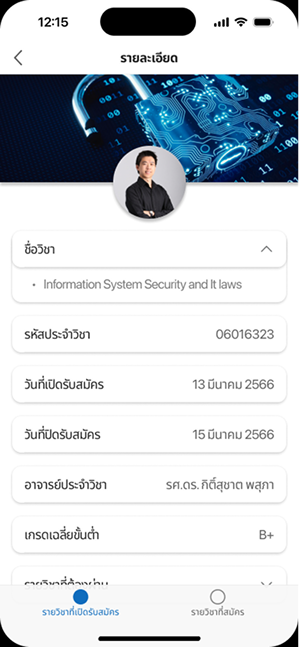
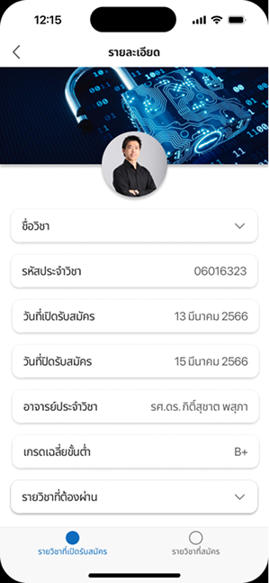
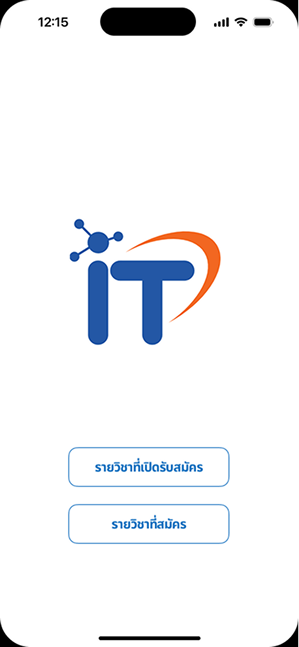
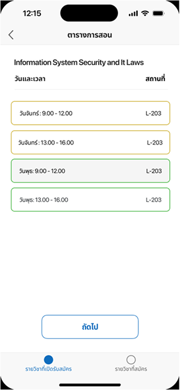
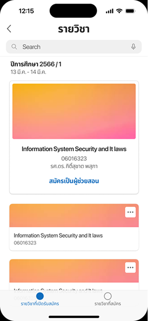
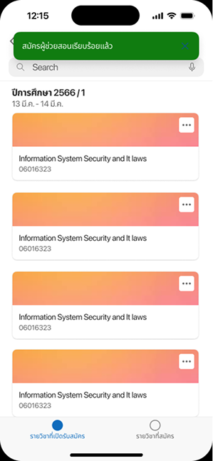
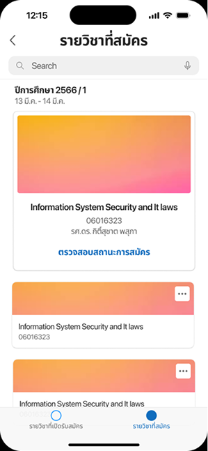
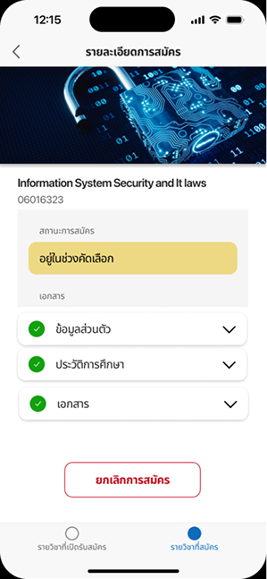
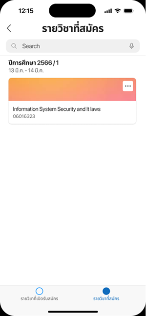
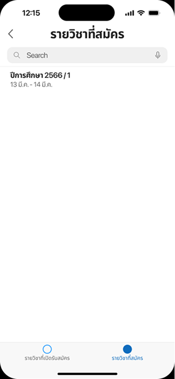